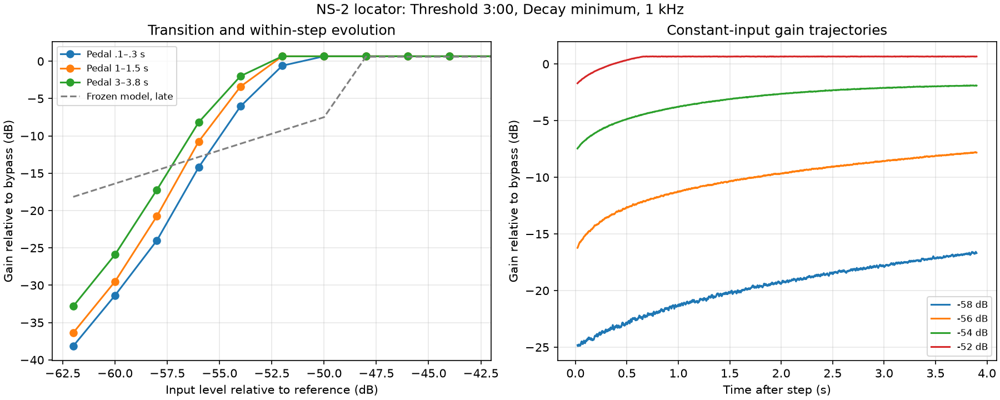

30 October 2026 · Threshold 3:00, Decay minimum, Mode Reduction · Input → Output, Send/Return unused
History experiment completed: results and model constraints are now available. No additional NS-2 capture is requested. The plan and predictions below are preserved as the pre-recording record.
Assessment: both locator captures are usable. The transition is bracketed, and large constant-input gain rises remain well above the coherent noise estimate. The current model cannot reproduce these rises merely by shifting its threshold. The next packet separates quiet and loud history at fixed input levels and both Decay extremes. No production DSP changes or additional state are recommended yet.
This completes the two recordings in the locator plan. This was adaptive experiment design, not independent validation of a new model. The mathematical baseline and source hashes were frozen before capture.
Both takes report zero xruns and marker quality .998; their exact played float32 hashes agree with the prerecording prediction. No recorded sample reaches |x|≥.999. Recorded tail RMS is −101.30 dBFS in bypass and −99.68 dBFS engaged on the pedal channel. A zero-xrun report alone does not exclude every possible recording artifact.
Stored capture latencies are 455 and 577 samples. Each is compensated separately. The aligned loopback carrier differs by at most .0024 dB and .00064 phase-equivalent sample across usable plateau windows. Envelope-edge comparisons agree within .23 ms, preventing a whole-cycle ambiguity from being hidden by the carrier phase check. These discrepancies cannot explain gain movement lasting seconds.
The new true bypass has a 1 kHz transfer of approximately −9.208 dB from played samples to the pedal ADC channel, with only .0031 dB spread across −62 to −12 dB input. It differs from the original NS-2 bypass by −.020 dB at −12 dB input. The engaged open path is +.660 dB relative to this same-session bypass. This is consistent with the reported bypass state; the gate's large reductions on the quiet steps provide a separate engaged-state check.
Primary estimates retain the specified 10 ms coherent-magnitude estimator and three window medians. As robustness checks, each window was also measured with a Hann-windowed complex carrier projection and a fixed-phase projection referenced to the open path. At the selected partial levels, these agree within about .03 dB. The carrier-to-neighbor-bin ratios are at least 59 dB at −56 dB input and 67 dB at −54 dB input. Those ratios include possible leakage and are not statistical confidence intervals. Even the lowest eligible −62 dB windows have at least 30 dB coherent margin. The −100 dB conditioning portions fail this test and are excluded from all gain claims; ratios of two noise-limited magnitudes there are misleading.
| Input, dB relative to reference | Gain, 0.1–0.3 s | Gain, 1.0–1.5 s | Gain, 3.0–3.8 s | Late slope |
|---|---|---|---|---|
| −62 | −38.15 dB | −36.37 dB | −32.82 dB | +1.68 dB/s |
| −58 | −24.02 dB | −20.76 dB | −17.24 dB | +1.27 dB/s |
| −56 | −14.21 dB | −10.76 dB | −8.18 dB | +.86 dB/s |
| −54 | −6.05 dB | −3.40 dB | −2.00 dB | +.24 dB/s |
| −52 | −.59 dB | +.66 dB | +.66 dB | Approximately zero |
| −50 through −44, and −12 | +.66 dB | +.66 dB | +.66 dB | Approximately zero |
At −56 and −54 dB, early-to-late gain increases are 6.03 and 4.05 dB. The unchanged model predicts essentially flat gain during those constant-input ascending steps. Across the eleven non-reset plateaus, 0.1–3.8 seconds per plateau, its gain-envelope RMS error is 8.05 dB. That aggregate is dominated by very quiet operating conditions and is not an audibility score; the explicit trajectories are more informative.

Supported: the observed upward dynamics are absent from the current equations, and four-second endpoints are not always equilibrium. Not yet identified: a physical time constant, a unique comparator threshold, the number of internal states, or the circuit topology. The inputs were presented in increasing order, so level and prior state remain confounded. Changing the Decay control and deliberately changing the preceding signal are the necessary next discriminators.
The frozen implementation follows an input peak, then two dB-domain states E and V. Both rise immediately with input level; they fall with Decay and 7.94×Decay. A hysteretic switch opens at T+1.29 dB and closes 10.47 dB lower. Its attenuation G jumps to zero when open and relaxes toward −7.56 dB when closed. Overall gain is
gdB = .6 + G − .889 max(0, T − V) T = −49.40 dB at Threshold 3:00 Decay minimum = 24.6 ms; maximum = 460.3 ms
The exact renderer also includes the production attenuation floor and the existing Tone shelf. A threshold shift can move an abrupt opening point, but, with both E and V rising immediately, it cannot generate a multi-second positive slope during a constant-input step. Existing falling-state memory can explain some differences after loud conditioning; those differences must be compared with predictions before attributing them to an additional state.
Recommendation now: keep the production architecture as the comparator. After the history test, first consider a bounded, level-dependent rise law on an existing control state if the data require it. Add a new state only if simpler changes fail across both histories, both Decay extremes and the prompt-opening control. The older 220 Hz picked notes and loud jumps remain regression data. A slow opening applied globally would be inconsistent with their prompt response.
Keep Threshold physically untouched at the locator's 3:00 position, Mode Reduction, and the same cable path and interface gains. The probe levels are −56, −54 and −44 dB. The first two distinguish a strong partial rise from the approach to fully open; −44 dB is above both the measured transition and the nominal model threshold, serving as a prompt-opening control.
Each long take automatically performs this sequence at each probe level:
24 s digital silence → 8 s probe → 2 s at −12 dB → 8 s same probe Repeat for −56, −54, −44 dB; finish with a 2 s open-path reference.
The carrier is continuous-phase 1 kHz with 1 ms cosine envelope transitions. Silence is actual zero in the generated file, although the physical rig still contributes noise. The two engaged takes use the identical 128-second body, first at minimum Decay and then maximum Decay. A third, short, true-bypass take checks all probe levels and −12 dB. Including markers and tails, total recorded audio is 272.55 seconds.
The 24-second pauses are intentional: do not interrupt them. The baseline slow state at maximum Decay has τ=3.655 s. For a fixed low target, after 24 seconds approximately .14% of its initial excess remains, compared with 11.2% after eight seconds; the sample-level predictions also include the preceding peak follower. This supports the reset duration against the existing model but does not prove that every physical state has reset. Likewise, an eight-second probe is an observation window, not an assumption of equilibrium.
| Take | Required state |
|---|---|
| 1 · history-threshold-0300-decay-0700 | Pedal ON; Threshold unchanged; Decay fully counter-clockwise; Mode Reduction |
| 2 · history-threshold-0300-decay-0500 | Pedal ON; change only Decay to fully clockwise |
| 3 · bypass-history-check-1000 | Switch pedal OFF; leave all other controls and cables unchanged |
cdpython tools/capture/capture.py run \ captures/boss/ns-2/2026-10-30-history \ tools/capture/plans/ns-2-history.json
The Scarlett has been rechecked and the results saved in the new session snapshot: Pro Audio, 48 kHz, 128 frames, required ports and routing, INST/pad on/AIR off, unity software gains. Physical Input 2 gain remains a user-set minimum. No new absolute calibration or interface adjustment was performed.
The new frozen protocol contains the segment map, stimulus hashes, source-result hashes and predicted gain-window medians for both Decay extremes. It includes the unchanged threshold map and one explicitly provisional shifted-map example: opening at −53 dB, between the locator's partial −54 and fully open −52 dB steps. This midpoint is not an identified physical threshold. Both variants retain the same state equations. A single +.06005 dB open-path correction is taken from the locator and fixed for all predictions.
For example, after quiet reset the original map predicts −12.77 dB gain at the −56 dB probe and −10.99 dB at −54 dB, flat through the analysis windows at either Decay setting. The shifted example predicts −8.42 and −6.90 dB, also flat. After loud conditioning, both models initially remain open; minimum Decay produces faster subsequent attenuation, while maximum Decay can remain open for most or all of the eight-second probe. Thus a history difference alone is not evidence for a new state—the baseline already predicts it.
The primary comparison will use the complete measured gain trajectories, early/late changes, matched-history differences and Decay dependence without fitting new parameters. The true locator bypass calibrates the played probe signal, with the closing bypass and loopback checking for change; any bypass discrepancy exceeding .1 dB must be reported before pooling references. Digital-zero reset periods will not be scored as gain ratios.
| Result | Consequence |
|---|---|
| Positive near-threshold rise after quiet reset at both Decay extremes, with similar timing; −44 and −12 dB controls open promptly | Supports a separate upward time scale restricted to the transition region; first test a modified existing-state rise law. |
| Quiet/loud differences match the existing falling states and switch after threshold calibration | Existing memory may suffice for that part of the behavior; no extra state follows from correlation alone. |
| History differences persist beyond the model prediction or depend on reset duration | Investigate longer memory and verify physical reset before changing state count. |
| Only noise-limited bins move, or reference transfer moves too | Resolve apparatus/estimator behavior rather than fitting it into the pedal. |
Any eventual improvement must preserve fast picking and decaying-note tails and be compared by ear on guitar. No perceptual verdict follows from these quiet sine measurements alone.
OPENBLAS_NUM_THREADS=1 MPLCONFIGDIR=tools/research/.mpl-cache \ python tools/research/analyze_ns2_locator.py OPENBLAS_NUM_THREADS=1 python tools/research/prepare_ns2_history.py python tools/capture/capture.py plan tools/capture/plans/ns-2-history.json
Analysis · complete measurements · log · stimulus and prediction generator · prediction summary · capture plan. The generated stimulus is stored in captures/stimuli/ns-2-history-1000.wav in the primary repository, alongside the local raw audio tree. Audio is not committed; the generator, sample hash and protocol reproduce it. Existing changed frozen files are refused rather than overwritten.
Implementation instruction: no new production parameters or state equations are justified yet. Keep the current DSP unchanged while this experiment resolves the ambiguity. The exact baseline equations, source version and required acceptance comparisons are provided for the coding agent; production implementation of a replacement is deferred until the model is supported.